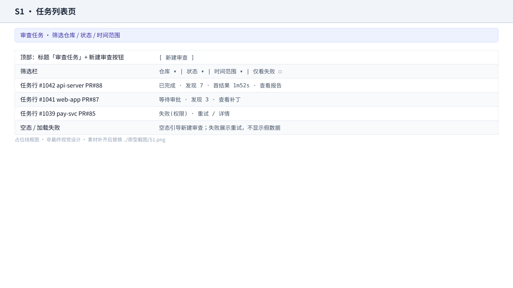
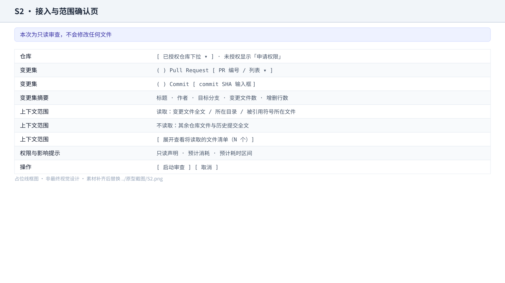
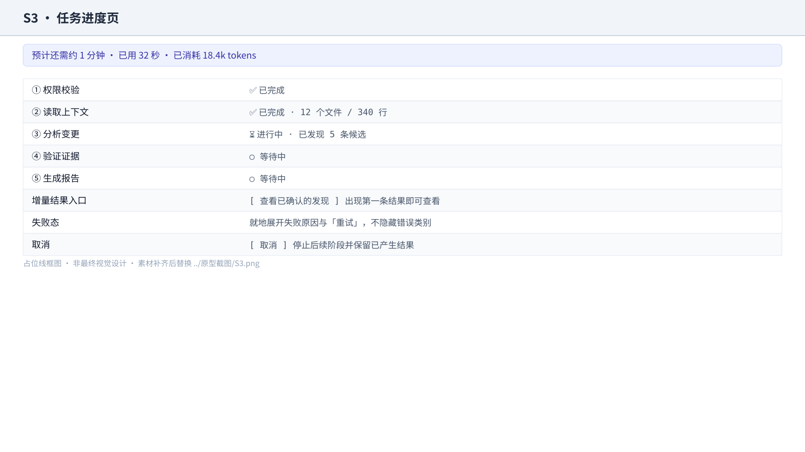
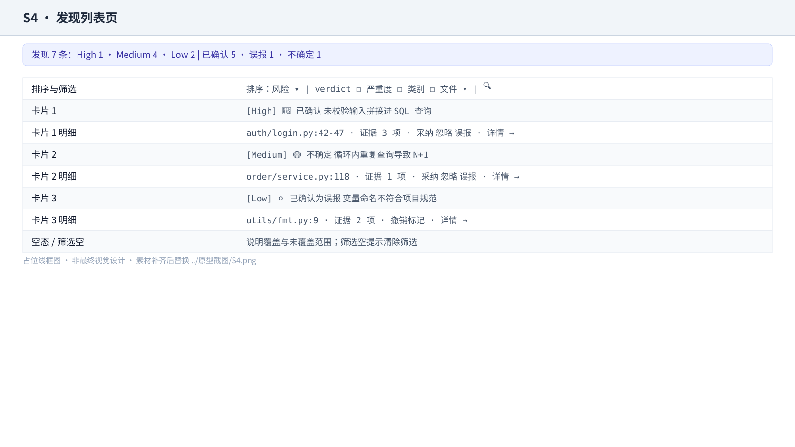
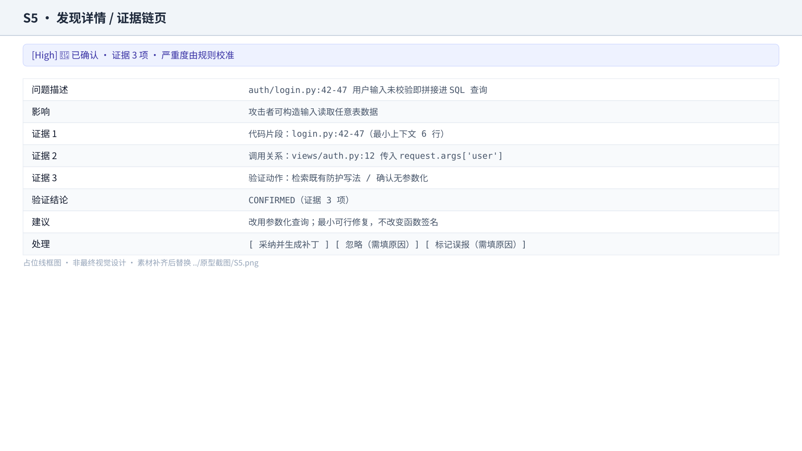
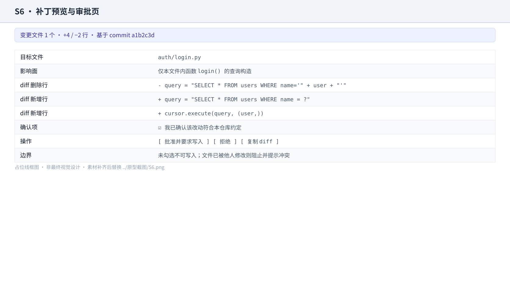
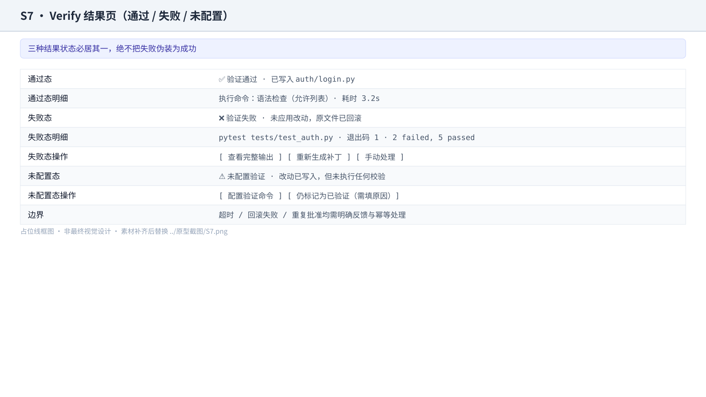
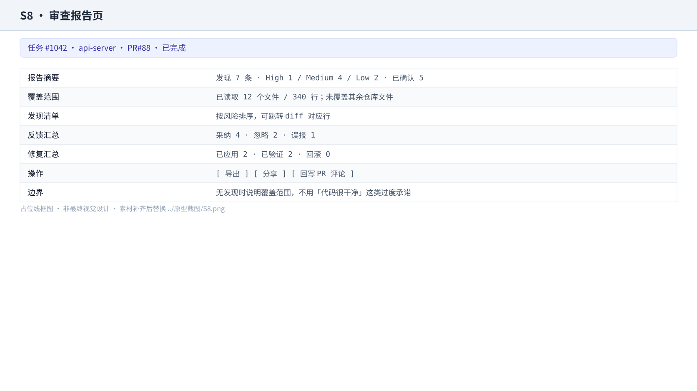
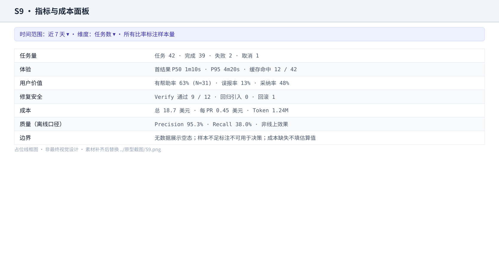
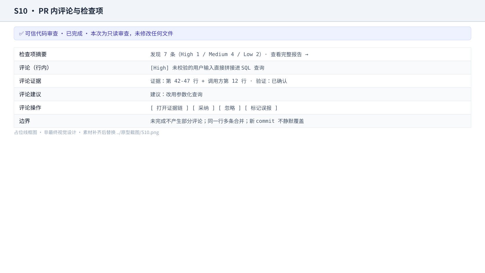

可信代码审查 Agent · 产品需求文档（PRD）
代码作者 / Reviewer / 研发经理 / 平台管理员 · GitHub / GitLab PR 应用 + Web 工作台 + CLI / REST · MVP v1.0
📋 项目信息
| 项目名称 | 可信代码审查 Agent（Code Review Agent） |
| 版本号 | MVP v1.0（P0 范围） |
| 文档负责人 | 产品负责人 |
| 需求状态 | 评审中（P0 范围与「差距关闭表」待研发确认） |
| 目标用户 | 代码作者、Reviewer / Tech Lead、研发经理、安全 / 平台管理员 |
| 涉及端 | GitHub / GitLab PR 应用（待建设）、Web 工作台、CLI、REST API |
| 功能入口 | PR 内评论与检查项；工作台任务页与趋势页；CLI cra-cli / cra-multi；REST /analyze 等接口 |
| 交付阶段 | MVP v0.1（P0）；P1 / P2 / P3 见「九、上线计划与灰度策略」后的路线图 |
| 关联文件 | docs/architecture.md、docs/agent-evaluation-plan.md、docs/industrial-gaps.md、docs/current-remediation-plan.md、reports/、docs/product-manager/00～07 |
| 事实边界 | 本仓库当前是本地 / 自托管技术原型。「已具备」均有代码证据；「待建设」属产品化规划，不代表已实现 |
📝 版本记录
| 版本 | 日期 | 修订人 | 修订说明 |
|---|---|---|---|
| v1.0 | 2026-09-28 | 产品负责人 | 由 v0.1 大纲扩写为完整 PRD：新增项目信息、版本记录、需求目标量化表、范围块、逐功能规格与【边界说明】、数据埋点、时序图、非功能需求、发布门槛与灰度、追溯矩阵；P0 功能重排为 FR-1～FR-6（新增「变更集缓存与额度保护」）；新增「差距关闭表」区分已具备与待建设。影响：研发评估、测试用例与试点验收口径 |
| v0.1 | 2026-09-20 | 产品负责人 | 首版 MVP 范围与 12 周路线图大纲，确立只读优先、审批后修复的产品边界 |
一、需求背景
使用 GitHub / GitLab PR 流程的研发团队，在合入主干前的审查环节依赖人工 Reviewer：代码作者提交变更后等待人工审查，Reviewer 需要在有限时间内判断变更是否可合入。该环节存在三个结构性问题：审查时间与开发节奏错位（作者被阻塞、Reviewer 被打断）、重复性低风险问题持续消耗高级工程师注意力、评论缺少可复现证据导致作者不信任结论。
对代码作者，反馈到达晚、来回沟通多，等不到结论就无法推进；对 Reviewer，上下文切换成本高，大量时间花在确认低价值问题上；对研发管理者，审查投入无法量化，无法判断质量投入是否产生收益；对安全 / 平台人员，引入外部 AI 工具会带来代码外发、自动改写失控和结果不可追溯的合规风险。产品机会因此不是「再做一个能生成评论的模型入口」，而是把每个高风险问题转化为可核验、可处理、可回滚的决策单元。
事实来源：reports/eval_replay_20260927.md、docs/agent-evaluation-plan.md。标注集 124 条（108 条正例 + 16 条 FP 陷阱），2026-09-27 replay 扫描 124/124，运行口径 Precision 95.3%、Recall 38.0%、F1 0.54，其中 3 条 API 超时被当前脚本计入 FN；排除 API_ERROR 后 Precision 95.3%、Recall 39.0%、F1 0.55。这组数字说明误报已可控、漏报明显，直接决定两个产品选择：结果默认不阻塞合并、高危问题需要确定性规则兜底。口径必须并列说明：仓库内另有 data/eval_results.json 记录 TP=48 / FP=1 / FN=60 / TN=15（Precision 98.0%、Recall 44.4%、F1 0.61），两者来自不同运行，不得混用或取优。尚未完成真实客户访谈、真实 PR 试点与长期 ROI 证明。
二、需求目标
总目标：让代码作者和 Reviewer 在一个 PR 内完成「发现问题 — 核验证据 — 决定处理 — 安全生成补丁」的闭环，并愿意把结果当作审查输入，而不是把它当作需要再次审查的噪音源。
| 用户结果 | 衡量指标 | 统计口径 | 预期方向 | 目标值 |
|---|---|---|---|---|
| 作者在合并前就能拿到可用反馈，不再干等人工审查 | 首结果时延 P95 | 任务开始至第一条可判断结果的耗时 95 分位数 | ↓ | ≤ 5 分钟 |
| Reviewer 打开产品就能看到可信结论，不必自己再核一遍 | 有帮助率 | 标记「有帮助」的发现数 ÷ 有明确反馈的发现数 | ↑ | ≥ 60% |
| 结果被真正用起来，而不只是被看过 | 采纳率 | 已采纳或已修复的确认问题数 ÷ 确认问题数 | ↑ | 待基线确认 |
| 用户不被错误结论误导 | 误报率 | 被标记为误报的发现数 ÷ 有反馈的发现数 | ↓ | ≤ 20% |
| 高危问题不漏，安全事故不发生 | 高危问题召回率 | 被检出的高危标注问题数 ÷ 标注集中高危问题数 | ↑ | 待基线确认 |
| 重复审查不再重复付费与等待 | 缓存命中率 | 命中缓存的审查任务数 ÷ 审查任务总数 | ↑ | 待基线确认 |
| 修复动作不制造新故障 | Verify 通过率 | 通过验证的应用补丁数 ÷ 已执行验证的补丁数 | ↑ | ≥ 90% |
| 修复动作可放心授权 | 回归引入率 | 修复后新增失败的补丁数 ÷ 已应用且完成回归检查的补丁数 | ↓ | 趋近 0 |
| 单位成本可承受、可解释 | 成本 / PR | 模型与基础设施成本 ÷ 完成审查的 PR 数 | ↓ | 待基线确认 |
口径细则、切片维度与分母定义以 docs/product-manager/05_指标体系与实验方案.md §3.1 为准。没有真实基线前一律写「待基线确认」，不编造增幅。Precision 95.3% / Recall 38.0% 是单次、单数据集的离线评测观察值，不能当作真实用户价值或跨仓库泛化能力的证明。
三、需求概述（功能清单）
- 以变更集为中心的只读审查：以 PR / Commit 为输入，只读取变更文件与必要上下文，不做全仓库默认扫描。
- 可核验的发现卡片：每条发现可回到文件、行号、上下文与验证动作；三类验证结论视觉可区分。
- 任务状态与失败可恢复：阶段可见，失败可归因、可重试，刷新后可恢复。
- 补丁预览 + 人工审批：针对已确认问题生成完整 diff，未经审批不写入；写入可回滚。
- 有边界的 Verify：只能执行允许列表内的校验命令，结果如实回传。
- 变更集缓存与额度保护：同一 commit 重复审查复用缓存，不重复消耗模型额度。
- 反馈沉淀：采纳 / 忽略 / 误报标签与理由进入反馈事件与回归样本。
- 不替代人工安全审计、架构评审与发布审批——产品定位是审查输入，不是质量责任的转移。
- 不做 IDE 内联实时补全与全仓库聊天——偏离「合并前决策」这一高频高价值场景。
- 不做自动合并、不做强制阻塞合并——当前漏报明显，强阻塞会伤害研发流程，先建立基线。
- 不做复杂 RBAC 与组织级策略编排——依赖企业身份体系，属 P2，MVP 只做固定权限矩阵。
- 不把用户反馈直接当标注真值——反馈含噪音，直接当标签会污染评测集。
- 不默认保存完整源代码与密钥——数据最小化是安全前提。
| 模块 | 一级功能 | 说明 |
|---|---|---|
| 1 | FR-1 变更集接入与上下文边界 | 授权仓库后选择 PR / Commit，只读取变更文件与必要上下文；读取范围在任务开始前可见 |
| 2 | FR-2 审查任务状态与失败恢复 | 展示排队、读取上下文、分析、验证、生成报告、失败、完成；失败可归因可重试 |
| 3 | FR-3 发现卡片与证据链 | 类别、严重度、位置、描述、证据、影响、建议、验证状态、处理状态；可跳转、可筛选、可反馈 |
| 4 | FR-4 补丁预览与人工审批 | 生成完整 diff 并展示影响面；审批后写入，全程审计与可回滚 |
| 5 | FR-5 Verify 结果与降级 | 执行语法检查与允许列表内的校验命令，如实回传通过 / 失败 / 未配置 |
| 6 | FR-6 变更集缓存与额度保护 | 同一 commit 复用结果；重试与并发不失控，成本可见 |
3.1 权限矩阵
| 动作 | 代码作者 | Reviewer | 平台管理员 | 默认策略 |
|---|---|---|---|---|
| 查看审查结果 | ✓ | ✓ | ✓ | 仅授权仓库成员 |
| 标记采纳 / 忽略 / 误报 | ✓ | ✓ | ✓ | 写入反馈事件，保留操作者与时间 |
| 生成补丁 | ✓ | ✓ | ✓ | 只生成，不写入 |
| 批准写入 | − | ✓ | ✓ | 明确确认 + 审计记录 |
| 修改仓库规则 | − | − | ✓ | 组织级权限 |
| 查看成本与遥测 | 部分 | 部分 | ✓ | 脱敏后按角色展示 |
| 查看审计记录 | − | 部分 | ✓ | 只读，不可删改 |
3.2 严重度与优先级口径
| 严重度 | 判定依据 | 是否允许阻塞合并（MVP） |
|---|---|---|
| High | 可导致安全漏洞、数据错误、崩溃或资金 / 权限损失 | 否（只软提醒，人工判断） |
| Medium | 可导致逻辑错误、性能退化或可维护性显著下降 | 否 |
| Low | 风格、命名、注释、轻微可读性问题 | 否 |
3.3 验证结论与处理状态口径
| 验证结论 | 含义 | 处理状态取值 |
|---|---|---|
| CONFIRMED | 已取得证据支持，问题成立；强提示，默认进入修复候选 | OPEN / ACCEPTED / FIXED / FAILED |
| FALSE_POSITIVE | 已验证为误报；弱化展示，仍可追溯原因 | IGNORED |
| UNCERTAIN | 证据不足，无法确认；明确标注不确定，不进入默认修复候选 | OPEN / IGNORED |
3.4 风险分级与授权口径
| 等级 | 覆盖动作 | 授权要求 |
|---|---|---|
| SAFE（只读） | 读取文件、列目录、检索、取 diff、克隆授权仓库 | 默认自动放行 |
| MODERATE（受控写入 / 受控执行） | 写入文件、执行允许列表内命令、创建分支或提交 | 需明确审批；写前自动备份 |
| DANGEROUS（危险动作） | 递归删除、磁盘格式化、关机、系统级设备写入等 | 一律拒绝，不提供自助放行入口 |
当前实现差距：现有人工审批守卫在未注入外部审批回调时，会把「受控写入 / 受控执行」级动作自动放行；并且有入口根本不注入该守卫。因此当前并不存在「任何写入均需人工审批」的保证。上表描述的是 MVP 目标行为，不是现状。
3.5 缓存与额度口径
| 规则 | 口径 |
|---|---|
| 缓存键 | 仓库标识 + commit SHA + 上下文策略版本 + 模型 / 提示词版本 |
| 命中缓存 | 直接复用既有结果，任务标记「命中缓存」，不重复计费 |
| 未命中但要复用 | 必须明确告知用户为何重新计算（如上下文策略或模型版本已变更） |
| 单任务额度保护 | 单任务 Token 与工具轮次有上限，触顶后转为「部分完成 + 明确说明」 |
| 重试 | 有限次退避重试，重试不叠加重复计费；超过上限进入失败态 |
当前实现差距：现有缓存是进程内的模型响应缓存（内存 + 过期时间，进程重启即失效），没有变更集粒度的审查结果缓存；也没有任何 Token / 成本上限与数据保留策略。
3.6 差距关闭表（已具备 → MVP 需建设）
| 编号 | 能力 | 已具备的现状 | MVP 需建设 |
|---|---|---|---|
| G-1 | PR / Commit 原生接入 | 仅本地路径与本地 git 仓库操作 | GitHub / GitLab 授权、变更集列表、行内评论回写 |
| G-2 | 任务状态机 | 无任务状态枚举，会话模式是自由字符串 | 状态持久化、阶段可见、刷新后恢复 |
| G-3 | 发现字段规格 | 现有单值行号、验证结论含中间态、布尔型已验证标记 | 行号区间、处理状态、结构化证据、验证状态、追踪标识 |
| G-4 | 写入人工审批 | 风险分级已实现，但默认自动放行中度风险，且部分入口未注入守卫 | 所有入口强制注入审批；未获批准不得写入；审计留痕 |
| G-5 | 命令允许列表 | 沙箱支持白名单参数但默认为空；容器级沙箱已实现却从未被实例化 | 默认允许列表 + 超时；按需启用容器级隔离 |
| G-6 | 变更集缓存 | 仅进程内模型响应缓存 | 按缓存键的持久缓存与命中说明 |
| G-7 | 额度与预算控制 | 无 Token / 成本上限、无预算阈值、无保留策略 | 单任务上限、超限转「部分完成」、成本可查 |
| G-8 | 追踪标识 | 无统一追踪标识，日志会话标识与数据库会话标识不互通 | 统一可关联的追踪标识 |
| G-9 | 审计不可篡改 | 追加写日志文件与日志表，无防篡改、无保留期 | 审计记录只读、可追溯、按策略保留 |
| G-10 | 用户隔离 | 依赖会话所有人标识过滤，有已知入口未做该隔离 | 全部入口统一隔离校验 |
四、业务流程图
flowchart TD
A[用户授权仓库并选择 PR / Commit] --> B{权限与参数校验}
B -->|不通过| B1[明确提示缺失权限并可切换仓库]
B -->|通过| C{缓存是否命中}
C -->|命中| C1[复用既有结果并标记命中]
C -->|未命中| D[读取变更文件与必要上下文]
D --> E[发现候选问题]
E --> F[逐条验证证据并给出验证结论]
F --> G[去重合并、分级并生成报告]
G --> H[展示发现卡片与证据链]
C1 --> H
H --> I{用户如何处理}
I -->|采纳 / 忽略 / 误报| J[记录反馈并沉淀回归样本]
I -->|需要修复| K[生成补丁并展示完整 diff]
K --> L{是否批准写入}
L -->|拒绝| M[仓库保持不变，保留 diff 供后续处理]
L -->|批准| N[写入分支 / 创建提交]
N --> O[执行允许列表内的 Verify]
O --> P{验证是否通过}
P -->|通过| Q[标记已验证并写审计记录]
P -->|失败| R[标记失败，保留 diff 与命令输出，可回滚]
Q --> J
R --> J
M --> J
J --> S[反馈进入评测集与趋势面板]以上为可复制的 Mermaid 源码。交互式流程图文件（[需求名]-flow.html）在流程图步骤产出后替换本块；本次先行保留源码文本，避免 iframe 指向不存在的文件。
五、交互流程图
flowchart LR
A[S1 任务列表页] -->|新建审查| B[S2 接入与范围确认页]
B -->|启动| C[S3 任务进度页]
C -->|完成| D[S4 发现列表页]
C -->|失败| C1[失败详情与重试]
C1 -->|重试| C
B -->|取消| A
D -->|点击某条发现| E[S5 发现详情 / 证据链]
D -->|批量筛选与反馈| D
E -->|采纳并修复| F[S6 补丁预览与审批页]
E -->|标记忽略 / 误报| D
F -->|拒绝| D
F -->|批准写入| G[S7 Verify 结果页]
G -->|通过| H[S8 审查报告页]
G -->|失败或未配置| G1[失败 / 未配置处理]
G1 --> H
H -->|查看趋势| I[S9 指标与成本面板]
D -->|导出 / 分享| H
H -->|回写 PR 评论| J[S10 PR 内评论与检查项]以上为可复制的 Mermaid 源码；交互流程图文件（[需求名]-screenflow.html）产出后替换本块。
六、详细方案
原型列素材说明：原型列保留可评审的占位线框图（原型截图/wireframe-S*.svg）；同时提供可点击原型 打开可信代码审查 Agent 原型，用于验证任务列表、发现证据、补丁审批、Verify 和质量报告主链路。每一行 = 一个界面或一个状态变体。
| 一级模块 | 二级功能 | 原型 | 描述 |
|---|---|---|---|
| 1 接入与任务管理 |
1.1 任务列表页 |  占位线框图 · 待替换为真实截图 |
【页面元素】
1、顶部标题栏：标题「审查任务」+ 右侧「新建审查」主按钮 2、筛选栏：仓库下拉、状态下拉、时间范围下拉、「仅看失败」勾选项 3、任务表格：任务编号、仓库与变更集、状态、发现数、首结果时延、操作入口 【交互说明】
1、点击某行任务 → 按任务所处阶段进入任务进度页、发现列表页或审查报告页 2、点击「重试」→ 复用原任务输入重新排队，生成新任务编号并保留与原任务的关联 3、切换筛选条件 → 列表即时刷新，筛选状态写入地址栏以便分享与刷新恢复 【数据与内容规则】
1、仅展示当前用户有权访问的仓库任务 2、默认按创建时间倒序，支持按状态与严重度筛选 【边界说明】
1、无任何任务 → 空态引导「新建一次只读审查」，并给出一条示例任务说明 2、任务列表加载失败 → 展示重试入口，不显示假数据 3、任务量超出单页 → 分页或游标加载，不通过截断隐藏旧任务 |
| 1.2 接入与范围确认页 |  占位线框图 · 待替换为真实截图 |
【页面元素】
1、仓库选择区：已授权仓库下拉，未授权仓库不可选并提供「申请权限」入口 2、变更集选择区：单选「Pull Request / Commit」，分别对应 PR 编号或列表、commit SHA 输入框 3、变更集摘要卡片：PR 标题、作者、目标分支、变更文件数、增删行数 4、上下文范围区块：以「读取 / 不读取」两行说明边界，并提供「展开查看将读取的文件清单」 5、权限与影响提示区：只读声明、预计消耗、预计耗时区间 6、底部操作区：「启动审查」主按钮、「取消」次按钮 【交互说明】
1、选择仓库 → 加载该仓库可选 PR / Commit 列表；无权限仓库不进入下一步 2、切换「Pull Request / Commit」→ 变更集输入控件随之切换，两种模式各自保留已填内容 3、点击「展开查看将读取的文件清单」→ 展开文件路径列表，清单过长时分页展示 4、点击「启动审查」→ 校验权限与参数，通过则跳转任务进度页，不通过则就地提示原因与修复入口 5、点击「取消」→ 放弃本次配置并返回任务列表页，不产生任何读取与计费 【功能逻辑】
1、上下文读取范围在任务开始前确定并展示，任务启动后不再静默扩大；确需扩大时必须回到本页重新确认 【边界说明】
1、仓库未授权 → 「启动审查」置灰，点击提示所需权限项与申请入口，不读取任何代码 2、变更集不存在或已被强制推送覆盖 → 提示该变更集已不可用，并提供重新选择入口 3、无变更文件 → 允许启动但明确提示「未检测到变更」，任务完成后不产生发现 4、变更文件数或 diff 体量超出上下文上限 → 提示缩小范围或改为仅审查指定目录，不静默截断文件 5、同一 commit 命中缓存 → 启动前即提示将复用结果，用户可选择复用或强制重新计算 |
|
| 1.3 任务进度页 |  占位线框图 · 待替换为真实截图 |
【页面元素】
1、任务头部：任务编号、仓库、变更集、取消入口 2、阶段清单：权限校验、读取上下文、分析变更、验证证据、生成报告，各自状态图标与补充信息 3、进度信息行：预计剩余、已用时间、当前消耗 4、增量结果入口：「查看已确认的发现」，出现第一条结果后即可点击 【交互说明】
1、任务进行中刷新页面 → 恢复当前阶段与已产出结果，不重头开始 2、点击「取消」→ 停止后续阶段并保留已产生结果，任务标记为已取消 3、出现第一条可判断结果 → 展开增量入口并提示首结果时延 4、阶段失败 → 就地展开失败原因与「重试」入口，不隐藏原始错误类别 【功能逻辑】
1、只展示用户可理解的阶段名，不展示内部 Agent 日志与调试细节 2、「读取上下文」完成后展示实际读取的文件数与行数，与接入页的承诺范围一致 【边界说明】
1、权限校验失败 → 阶段一标红，提示缺失权限项与申请入口，不进入后续阶段 2、上下文读取超时 → 标记为可重试失败，保留已读取部分，重试时优先复用已完成工作 3、结构化结果无法解析 → 不产生正式发现，标记失败类别为结果解析失败并允许重试 4、模型限流或服务错误 → 有限次退避重试，显示等待与重试次数，不重复计费失控 5、单任务消耗触顶 → 转为部分完成，明确说明已覆盖与未覆盖范围，不静默截断 6、页面长时间未刷新后回到本页 → 从服务端恢复最新状态，不依赖前端本地计时 |
|
| 2 审查结果 |
2.1 发现列表页 |  占位线框图 · 待替换为真实截图 |
【页面元素】
1、任务摘要栏：仓库、变更集、状态、发现总数与严重度分布、验证结论分布 2、排序与筛选栏：排序维度、验证结论 / 严重度 / 类别 / 文件筛选、关键词搜索 3、发现卡片列表：严重度标签、验证结论标签、标题、文件与行号、证据条数、行内反馈按钮、「详情」入口 【交互说明】
1、点击卡片或「详情」→ 进入发现详情页并定位该条发现 2、点击卡片上的文件与行号 → 在代码 diff 视图中定位到对应行并高亮 3、点击「采纳 / 忽略 / 误报」→ 就地更新处理状态并写入反馈事件，已标记项可撤销 4、批量选择后执行同一操作 → 统一写入反馈事件，逐条保留操作者与时间 【功能逻辑】
1、默认按风险排序，依次比较严重度、验证结论置信度、影响面 2、三类验证结论在颜色、图标与文案上均可区分，不能只靠颜色 3、每条展示的发现必须带文件与行号，行号越界时降级为文件级并明确标注 【边界说明】
1、无发现 → 空态明确说明本次未发现可展示问题，并说明覆盖与未覆盖范围 2、筛选结果为空 → 提示当前筛选条件与「清除筛选」入口，不显示空列表 3、行号越界或文件已变更 → 降级为文件级定位并提示行号基于历史版本 4、同一位置多条发现 → 合并为一张卡片，内部分条列出，避免重复刷屏 5、大变更集 → 分页并默认只展开高与中严重度，低严重度折叠 |
| 2.2 发现详情 / 证据链页 |  占位线框图 · 待替换为真实截图 |
【页面元素】
1、顶部导航与操作区：返回入口、严重度与验证结论标签、「采纳并修复」主按钮 2、问题描述区：现象与位置 3、影响区：后果与严重度判定依据 4、证据链区：逐项列出代码片段、调用关系、验证动作、验证结论与证据条数 5、建议区：最小可行修复方向 6、处理区：采纳、忽略、误报三个动作，忽略与误报需填写原因 【交互说明】
1、点击证据项中的代码位置 → 展开对应代码片段或跳转 diff 对应行 2、点击「采纳并生成补丁」→ 进入补丁预览页并携带该发现标识 3、选择「忽略 / 标记误报」→ 弹出原因输入，提交后返回发现列表并更新状态 4、对证据不足的发现点击采纳 → 提示证据不足，需人工确认后再生成补丁 【功能逻辑】
1、证据链每一项都必须可追溯到真实读取内容，不允许展示未经证据支持的因果结论 2、严重度由模型建议、规则校准后定档，用户可见判定依据 【边界说明】
1、证据缺失 → 降级为不确定并说明证据不完整，不给出确定结论 2、代码在该发现生成后已被修改 → 提示证据可能过期，提供基于最新版本重跑入口 3、未填原因即提交忽略或误报 → 阻止提交并提示原因必填 4、同一发现被多人标记为不同状态 → 保留全部反馈事件，以最新一次为当前状态并展示历史 |
|
| 3 安全修复 |
3.1 补丁预览与审批页 |  占位线框图 · 待替换为真实截图 |
【页面元素】
1、顶部信息栏：目标文件、「返回发现」入口 2、变更摘要：变更文件数、增删行数、基于的 commit、影响面说明 3、完整 diff 视图：逐行展示增删内容，保留上下文行 4、确认勾选项：确认改动符合仓库约定 5、操作区：「批准并要求写入」主按钮、「拒绝」、「复制 diff」 【交互说明】
1、点击「批准并要求写入」→ 勾选项已确认时提交审批，进入写入与验证流程，未勾选则提示先确认 2、点击「拒绝」→ 不写入任何文件，保留该 diff 供后续处理，返回发现列表并记录拒绝反馈 3、点击「复制 diff」→ 复制完整 diff 到剪贴板，便于在 PR 中讨论或手动应用 4、批准后 → 跳转验证结果页并展示实时验证状态 【功能逻辑】
1、写入前必须展示变更文件、增删行数与影响面 2、任何写入都必须记录操作者、时间、任务标识与回滚信息 3、写前自动保留可回滚的原文件副本 【边界说明】
1、补丁生成失败 → 明确提示失败原因，不写入任何文件，发现状态保持为可重试的待处理 2、目标文件在生成补丁后被他人修改 → 阻止直接写入，提示冲突并提供重新生成补丁入口 3、用户拒绝 → 仓库原文件保持不变，拒绝行为进入反馈事件 4、审批过程中关闭页面 → 不产生写入，重新进入时恢复待审批状态 5、目标分支受保护或用户无写入权限 → 在审批前即提示，只保留复制 diff 路径 6、单次补丁影响文件数超出上限 → 阻止批量写入，要求拆分为多次审批 |
| 3.2 Verify 结果页（通过 / 失败 / 未配置三态） |  占位线框图 · 待替换为真实截图 |
【页面元素】
1、结果标题与图标：验证通过、验证失败、未配置验证三态之一 2、执行信息：执行的命令名称与来源、耗时，失败时含退出码 3、输出摘要：失败数与通过数等关键行，失败态提供「查看完整输出」 4、回滚说明：失败态明确说明原文件已回滚 5、操作区：查看最终 diff、返回发现列表、重新生成补丁、手动处理、配置验证命令 【交互说明】
1、点击「查看完整输出」→ 展开完整命令输出，含标准输出与错误输出 2、点击「重新生成补丁」→ 回到补丁预览页并携带上一次失败输出作为新输入 3、点击「配置验证命令」→ 进入仓库规则配置，需平台管理员权限 4、未配置态选择「仍标记为已验证」→ 需填写原因，并在报告与审计中保留该标注 【功能逻辑】
1、验证命令只能来自允许列表，模型不得自行扩大命令范围或权限 2、每个修复必须显示三种状态之一，不允许留空 3、验证失败即为修复失败，不进入已验证统计 【边界说明】
1、验证命令超时 → 标记验证失败并保留已捕获输出与超时说明 2、允许列表内无可用命令 → 进入未配置验证态，不得默认宣称成功 3、验证过程修改了无关文件 → 拒绝写入并提示异常，保留原始输出供排查 4、回滚失败 → 明确告警并给出人工恢复指引，不静默吞掉 5、用户对同一发现重复批准 → 幂等处理，不产生重复提交 |
|
| 3.3 审查报告页 |  占位线框图 · 待替换为真实截图 |
【页面元素】
1、报告摘要：任务标识、仓库与变更集、发现总数与严重度分布 2、覆盖范围说明：已读取文件数与行数、明确未覆盖的范围 3、发现清单：按风险排序，可跳转 diff 对应行 4、反馈汇总：采纳、忽略、误报数量 5、修复汇总：已应用、已验证、回滚数量 6、操作区：导出、分享、回写 PR 评论 【交互说明】
1、点击发现清单中的条目 → 跳转该发现的证据链 2、点击「导出」→ 生成可分享的报告文件，内容与页面一致 3、点击「回写 PR 评论」→ 将摘要与发现写回 PR，单条失败不影响其余 【边界说明】
1、无发现 → 说明覆盖范围与未覆盖范围，不使用代码很干净这类过度承诺 2、部分阶段失败 → 报告标注为部分完成，明确哪些阶段未执行 3、回写 PR 失败 → 提示失败原因并保留本地报告，不丢失结果 |
|
| 4 效率与成本 |
4.1 指标与成本面板 |  占位线框图 · 待替换为真实截图 |
【页面元素】
1、时间范围与维度切换 2、任务量卡片：任务数、完成、失败、取消 3、体验卡片：首结果 P50 与 P95、缓存命中数 4、用户价值卡片：有帮助率、误报率、采纳率，均标注样本量 5、修复安全卡片：验证通过数、回归引入数、回滚数 6、成本卡片：总成本、每 PR 成本、Token 用量 7、质量卡片：离线评测 Precision 与 Recall，标注离线口径非线上效果 【交互说明】
1、切换时间范围或维度 → 面板即时刷新，所有比率同步更新时间窗口与样本量 2、点击任一指标 → 展开该指标的口径说明，含分子、分母与切片维度 【功能逻辑】
1、每个比率指标旁必须展示样本量，样本不足时标注仅供参考 2、离线评测指标与线上行为指标分开呈现，不使用同一视觉权重混淆二者 【边界说明】
1、时间范围内无数据 → 展示空态与调整时间范围入口，不显示零值或占位假值 2、样本量低于阈值 → 展示观察值但标注不可用于决策 3、成本数据缺失 → 明确显示成本数据未接入，不按估算值填充 |
| 4.2 PR 内评论与检查项 |  占位线框图 · 待替换为真实截图 |
【页面元素】
1、检查项摘要行：审查状态、发现总数与严重度分布、「查看完整报告」入口、只读声明 2、行内评论：严重度标签、问题描述、证据摘要、建议、三个反馈按钮与「打开证据链」入口 【交互说明】
1、点击「查看完整报告」→ 在浏览器打开审查报告页 2、点击「打开证据链」→ 打开发现详情页并定位到该条发现 3、点击「采纳 / 忽略 / 标记误报」→ 写入反馈事件并在评论上回显当前处理状态 【功能逻辑】
1、评论默认不阻塞合并，MVP 不产生任何必须解决级别的检查结论 【边界说明】
1、审查任务未完成 → 检查项显示进行中状态，不产生部分评论 2、任务失败 → 检查项显示失败与可操作原因，不产生评论 3、同一行有多条发现 → 合并为一条评论，内部按严重度排序，避免刷屏 4、PR 更新产生新 commit → 旧评论标记为基于历史 commit，新结果另行展示，不静默覆盖 |
6.1 任务状态机与用户可见状态
stateDiagram-v2
[*] --> QUEUED
QUEUED --> LOADING_CONTEXT: 权限校验通过
QUEUED --> FAILED: 权限/参数错误
LOADING_CONTEXT --> PLANNING: 上下文准备完成
LOADING_CONTEXT --> RETRYABLE_FAILED: 超时/临时 API 错误
RETRYABLE_FAILED --> QUEUED: 用户重试
PLANNING --> VERIFYING: 产生候选发现
PLANNING --> COMPLETED: 没有可展示发现
VERIFYING --> REVIEWING: 取得验证结论
VERIFYING --> RETRYABLE_FAILED: 工具/API 临时错误
REVIEWING --> COMPLETED: 报告生成
REVIEWING --> FAILED: 结构化输出无法解析
COMPLETED --> PATCH_PREVIEW: 用户选择修复
PATCH_PREVIEW --> WAITING_APPROVAL: 补丁生成成功
PATCH_PREVIEW --> FAILED: 补丁生成失败
WAITING_APPROVAL --> VERIFY_FIX: 用户批准
WAITING_APPROVAL --> COMPLETED: 用户拒绝
VERIFY_FIX --> APPLIED: Verify 通过
VERIFY_FIX --> FAILED: Verify 失败
APPLIED --> [*]
FAILED --> [*]
COMPLETED --> [*]| 用户可见状态 | 内部状态 | 默认落地界面 | 允许的操作 |
|---|---|---|---|
| 待确认 | QUEUED / LOADING_CONTEXT / PLANNING / VERIFYING | 任务进度页 | 取消、查看增量发现、失败后重试 |
| 已确认 | COMPLETED（且有可展示发现） | 发现列表页 | 筛选、反馈、进入证据链、发起修复 |
| 修复中 | PATCH_PREVIEW / WAITING_APPROVAL / VERIFY_FIX | 补丁预览页 | 批准、拒绝、复制 diff |
| 已验证 | APPLIED | 验证结果页 | 查看最终 diff、重新生成补丁、手动处理 |
当前实现差距：代码中没有任务状态枚举，会话模式是自由字符串，且编排状态没有持久化检查点，因此「刷新后恢复」需新建（见 3.6 的 G-2）。
6.2 非功能需求
| 编号 | 类别 | 要求 | 验收方式 |
|---|---|---|---|
| NFR-1 | 性能 | 只读审查首结果 P95 ≤ 5 分钟；命中缓存的重复审查 ≤ 30 秒 | 灰度期埋点统计 |
| NFR-2 | 可靠性 | 任务失败可归因、可重试；刷新可恢复任务与报告 | 端到端验收用例 |
| NFR-3 | 安全（最小权限） | 默认只读；写入与命令执行需审批；命令受允许列表约束并有超时 | 权限矩阵 + 审计抽查 |
| NFR-4 | 安全（隔离） | 命令执行在隔离目录中进行；MVP 的隔离是进程级，用于防止误污染宿主，不等同于安全隔离 | 文档与界面提示口径核对 |
| NFR-5 | 数据最小化 | 不保存完整源代码与密钥；日志与评测结果脱敏；工具输出按保留策略过期 | 隐私检查清单 |
| NFR-6 | 审计 | 写入动作可回答谁在何时批准了什么 diff、执行了什么命令、结果如何，记录不可被普通用户删改 | 审计记录抽查 |
| NFR-7 | 可观测 | 结果层、轨迹层、效率成本层、稳定性层指标可观测、可归因 | 指标体系文档核对 |
| NFR-8 | 可维护 | 模型、提示词、评测集与价格版本可追溯，变更时生成新基线 | 版本记录与评测报告 |
| NFR-9 | 成本 | 单任务 Token 与工具轮次有上限；成本可按仓库与任务维度查看 | 指标面板与预算阈值 |
| NFR-10 | 兼容 | 支持空目录、大文件、CJK 文件名与内容、二进制文件、深层目录 | 边界集回归 |
NFR-4 的口径必须如实：现有命令隔离的实现说明自身已声明「不是安全隔离，无法防御恶意代码」。MVP 对外表述只能是「防止命令意外污染宿主目录」，不能表述为「安全的代码执行环境」。
6.3 发布门槛与灰度
| 阶段 | 范围 | 进入条件 | 退出条件 |
|---|---|---|---|
| 内部验证 | 自有仓库、只读 | 端到端只读流程可用 | 评测门禁无关键回归 |
| 灰度 A | 1～2 个试点团队、只读、不阻塞合并 | 内部验证通过 + 完成安全与隐私检查清单 | 首结果 P95 ≤ 5 分钟，失败可自行重试 |
| 灰度 B | 扩大到 5 个团队，开放反馈与筛选 | 灰度 A 的有帮助率与误报率达到目标 | 连续使用两周，无高危安全事件 |
| 灰度 C | 开放审批式修复 | 灰度 B 达标且修复质量集可用 | 验证通过率 ≥ 90%，回归引入率趋近 0 |
| GA | 团队版能力（含 CI 提醒，不阻塞） | 至少 3 个团队持续使用且愿意扩大范围 | 进入 P1 开发 |
发布前必须同时满足四层条件，任一层关键回归都不允许发布：结果层要求关键评测集 Precision 达标且无高危安全回归；轨迹层要求工具错误、参数非法、解析失败、死循环、额度触顶与写入失败均可观测可归因；体验层要求新用户可在 5 分钟内完成一次只读审查且失败可自行重试；安全层要求默认只读、敏感字段脱敏、写入与命令执行有审批与审计、验证失败不被记为成功。
6.4 端到端验收用例
| 编号 | 用例 | 操作 | 预期结果 |
|---|---|---|---|
| C1 | 正常只读审查 | 启动审查并等待完成 | 任务完成，发现可跳转到 diff 对应行，报告可刷新恢复 |
| C2 | 无权限 | 选择无读取权限仓库的 PR | 不读取代码，展示所需权限与申请入口 |
| C3 | 结果解析失败 | 注入畸形结构化输出后启动审查 | 不产生正式发现，记录失败类别，可重试且不重复计费 |
| C4 | 模型临时错误 | 模拟限流与 5xx 后启动审查 | 有限退避重试、状态可见、额度不被重复消耗失控 |
| C5 | 上下文超限 | 用超大变更集启动审查 | 明确提示缩小范围，不静默截断文件 |
| C6 | 修复验证失败 | 审批并应用导致测试失败的补丁 | 标记失败，回滚且不保留改动，diff 与命令输出保留 |
| C7 | 未配置验证 | 在无允许列表命令的仓库应用补丁 | 显示未配置验证，不得标记为验证通过 |
| C8 | 无写入权限 | 用只读账号批准补丁写入 | 审批前即提示无权限，仅保留复制 diff 路径 |
| C9 | 重复提交 | 对同一 commit 再次启动审查 | 命中缓存；未命中时明确说明重新计算的原因 |
| C10 | 补丁冲突 | 补丁生成后修改目标文件再批准写入 | 阻止直接写入，提示冲突并提供重新生成补丁 |
| C11 | 忽略与误报可撤销 | 撤销已标记发现的标记 | 状态回退并保留两次反馈事件 |
| C12 | 审计可追溯 | 查询一次写入与验证的审计记录 | 可回答操作者、时间、任务、diff 摘要、验证命令与结果 |
| C13 | 写入必须经审批 | 不提供审批直接触发写入 | 写入被拒绝，不产生任何文件改动，事件记录为已阻止 |
C13 是 G-4 的验收口径：当前实现尚未满足，属于 MVP 必须关闭项。
七、数据埋点
埋点用于支撑 docs/product-manager/05_指标体系与实验方案.md 的指标口径。事件名沿用现有英文 snake_case 命名约定；参数暂缺的标记待确认，不留空。仓库已有 session_start、turn_end、tool_call_end、parse_result、node_stats 等工程事件用于轨迹层归因，与下表的产品层口径并存、不互相替代。
| 序号 | 埋点名 | 埋点中文名 | 埋点类型 | 埋点参数 | 参数值 |
|---|---|---|---|---|---|
| 1 | review_started | 审查任务启动 | 点击 | task_id、repo_id、pr_id、commit_sha、permission_scope、cache_hit | cache_hit：true / false |
| 2 | context_loaded | 上下文读取完成 | 结果 | task_id、file_count、line_count、latency_ms | 数值型，无枚举 |
| 3 | finding_presented | 发现卡片曝光 | 曝光 | task_id、finding_id、severity、category、verdict、agent_role | severity：High / Medium / Low；category：BUG / SECURITY / PERF / STYLE；verdict：CONFIRMED / FALSE_POSITIVE / UNCERTAIN |
| 4 | finding_feedback | 发现反馈提交 | 提交结果 | task_id、finding_id、user_role、reason_code | reason_code：ACCEPTED / IGNORED / FALSE_POSITIVE |
| 5 | patch_previewed | 补丁预览查看 | 曝光 | task_id、finding_id、file_count、added_lines、removed_lines | 数值型，无枚举 |
| 6 | patch_approved | 补丁审批结果 | 提交结果 | task_id、finding_id、approver_role、decision | decision：APPROVED / REJECTED |
| 7 | verify_finished | 验证执行完成 | 结果 | task_id、patch_id、verify_status、exit_code、latency_ms | verify_status：PASSED / FAILED / NOT_CONFIGURED |
| 8 | review_completed | 审查任务完成 | 结果 | task_id、finding_count、latency_ms、token_usage、model | 数值型，无枚举 |
| 9 | review_failed | 审查任务失败 | 结果 | task_id、failure_category、agent_role、retry_count | failure_category：PERMISSION / PARSE_ERROR / RATE_LIMIT / TIMEOUT / BUDGET_EXCEEDED |
| 10 | rollback_executed | 回滚执行 | 结果 | task_id、patch_id、rollback_reason | rollback_reason：VERIFY_FAILED / WRITE_CONFLICT / USER_REVERT |
公共字段（所有事件必带）：task_id、repo_id、pr_id、commit_sha、model、agent_role、risk_level、latency_ms、token_usage、permission_scope、failure_category。数据最小化要求：不记录完整源代码与密钥；日志中使用仓库或文件哈希等脱敏标识；原始工具输出按保留策略过期清理。
八、时序图
8.1 只读审查主链路
sequenceDiagram
autonumber
participant U as 用户
participant W as 工作台 / PR 应用
participant A as 审查服务
participant O as Agent 编排
participant T as 代码与工具
participant M as 模型服务
participant D as 结果存储
U->>W: 选择仓库与变更集，确认上下文范围
W->>A: 提交审查请求（含权限范围）
A->>A: 校验权限与参数
alt 权限不足
A-->>W: 返回缺失权限项
W-->>U: 提示申请权限，不读取代码
else 权限通过
A->>D: 查询变更集缓存
alt 命中缓存
D-->>A: 返回既有结果
A-->>W: 标记命中缓存，不重复计费
else 未命中
A->>O: 启动编排
O->>T: 读取变更文件与必要上下文
T-->>O: 返回文件内容与 diff
O->>M: 请求候选问题
M-->>O: 返回候选发现
O->>T: 验证证据（检索、调用关系）
T-->>O: 返回验证结果
O->>M: 请求验证结论与汇总
M-->>O: 返回结构化结果
alt 结构化解析失败
O-->>A: 标记解析失败类别
A-->>W: 不产生正式发现，提供重试
else 解析成功
O->>D: 持久化发现与报告
end
end
A-->>W: 流式返回阶段状态与增量发现
W-->>U: 展示发现卡片与证据链
end8.2 补丁审批、写入与验证
sequenceDiagram
autonumber
participant U as 用户（Reviewer）
participant W as 工作台
participant A as 审查服务
participant F as 修复编排
participant R as 目标仓库
participant V as 验证执行器
U->>W: 在发现详情点击「采纳并生成补丁」
W->>A: 请求生成补丁
A->>F: 生成完整 diff
F-->>A: 返回 diff 与影响面
A-->>W: 返回补丁预览
W-->>U: 展示变更文件、增删行与影响面
U->>W: 确认并点击「批准并要求写入」
W->>A: 提交审批（操作者、时间、任务标识）
A->>R: 写入前备份原文件
R-->>A: 备份完成
A->>R: 写入改动
A->>V: 执行允许列表内的验证命令
alt 验证通过
V-->>A: 退出码 0 与输出
A->>A: 记录审计（谁批准、改了什么、执行了什么命令、结果）
A-->>W: 标记已验证
W-->>U: 展示验证通过与最终 diff
else 验证失败
V-->>A: 非零退出码与输出
A->>R: 回滚到备份
A->>A: 记录审计与失败类别
A-->>W: 标记失败，保留 diff 与命令输出
W-->>U: 展示失败原因，提供重新生成补丁
else 未配置验证
V-->>A: 无允许列表内命令
A->>A: 记录未配置状态
A-->>W: 标记未配置验证
W-->>U: 提示配置验证命令或标注原因
end8.3 路线图与交付依赖
gantt
title MVP 12 周交付路线图
dateFormat YYYY-MM-DD
axisFormat %m/%d
section 研究与定义
访谈与竞品实测 :a1, 2026-10-01, 14d
PR 原型与可用性测试 :a2, after a1, 10d
section 核心只读链路
PR/Commit 接入 :b1, after a2, 14d
任务状态与结果卡片 :b2, after b1, 10d
反馈、筛选与持久化 :b3, after b2, 10d
section 安全修复
补丁预览与人工审批 :c1, after b3, 10d
Verify 与回滚 :c2, after c1, 10d
section 试点与决策
评测门禁与成本面板 :d1, after c2, 7d
5 个团队试点 :d2, after d1, 14d| 依赖项 | 影响 | 风险与应对 |
|---|---|---|
| GitHub / GitLab 应用权限审批 | 决定 PR 接入与行内评论能否按期交付 | 提前提交申请；以 CLI 与 API 旁路保证只读链路可独立演示 |
| 评测集与故障集的重复运行基线 | 决定发布门槛能否判定 | 先锁定模型、提示词与数据集版本，再比对新基线 |
| 修复质量评测集 | 决定是否开放审批式修复 | 该集未就绪不进入灰度 C |
| 模型服务稳定性与限流策略 | 影响首结果时延与成本 | 退避重试、模型降级、预算阈值 |
| 试点团队与脱敏仓库 | 决定真实价值证据能否取得 | 至少锁定 3 个团队与授权仓库 |
路线图中的日期是规划示例，不是项目已承诺的排期；真正排期要结合工程人数、GitHub / GitLab 权限审批和模型服务稳定性重新估算。版本范围：MVP 交付 FR-1～FR-6 并关闭 G-1～G-10；P1 进入团队工作流（PR 应用与 Webhook、CI 软提醒、仓库规则、团队反馈、趋势看板）；P2 企业化（SSO / SCIM、私有化、组织审计、保留策略、多模型路由、预算控制）；P3 平台化（自定义技能、规则市场、跨仓库知识库、开放 API）。
8.4 需求追溯矩阵
| 编号 | 用户故事 | 优先级 | 对应需求 | 对应验收用例 | 责任指标 |
|---|---|---|---|---|---|
| US-01 | 作为代码作者，我希望只审查本次 PR 变更，避免等待全仓库扫描 | P0 | FR-1 | C1、C2、C5 | 首结果时延 P95、缓存命中率 |
| US-02 | 作为 Reviewer，我希望按风险和证据快速筛选发现 | P0 | FR-3 | C1、C11 | 有帮助率、误报率 |
| US-03 | 作为代码作者，我希望知道为什么这条发现可信 | P0 | FR-3 | C1、C3 | 有帮助率、结果可追溯率 |
| US-04 | 作为 Reviewer，我希望先看到补丁再决定是否写入 | P0 | FR-4、FR-5 | C6、C7、C10、C12 | 验证通过率、回归引入率 |
| US-05 | 作为平台管理员，我希望限制模型和工具权限 | P0 | FR-4、FR-5 | C8、C12、C13 | 数据外发事件、回归引入率 |
| US-06 | 作为研发经理，我希望知道工具是否真的减少返工 | P1 | FR-6 | C9 | 采纳率、成本 / PR |
8.5 发现字段规格
| 字段 | 类型 | 必填 | 说明与约束 | 当前状态 |
|---|---|---|---|---|
| finding_id | 字符串 | 是 | 全局唯一，跨重试保持不变 | 已具备 |
| task_id | 字符串 | 是 | 关联一次审查任务 | 已具备（语义待统一） |
| file_path | 字符串 | 是 | 必须位于用户授权仓库范围内 | 已具备 |
| line_start / line_end | 整数 | 是 | 指向变更或必要上下文，越界时降级为文件级并标注 | 部分具备 |
| category | 枚举 | 是 | BUG / SECURITY / PERF / STYLE，可扩展但需版本化 | 已具备（未做校验） |
| severity | 枚举 | 是 | High / Medium / Low，由模型建议、规则校准 | 已具备（未做校验） |
| evidence | 列表 | 是 | 代码片段、调用关系、验证动作或失败输出，逐项可追溯 | 待建设 |
| suggestion | 文本 | 是 | 给出最小可行修复方向，不承诺一定适用 | 已具备 |
| verdict | 枚举 | 是 | CONFIRMED / FALSE_POSITIVE / UNCERTAIN | 已具备 |
| status | 枚举 | 是 | OPEN / ACCEPTED / IGNORED / FIXED / FAILED | 待建设 |
| verify_status | 枚举 | 是 | PASSED / FAILED / NOT_CONFIGURED | 待建设 |
| trace_id | 字符串 | 是 | 关联一次审查任务的遥测事件，不暴露内部密钥 | 待建设 |
8.6 术语表
| 术语 | 含义 |
|---|---|
| 变更集 | 一次 PR 或一个 commit 所包含的代码变更及其必要上下文 |
| 发现 | 系统提出的一个候选问题单元，含位置、描述、证据、建议与验证结论 |
| 验证结论 | 对一条发现的判断：已确认 / 误报 / 不确定 |
| Verify | 对补丁执行的校验动作（语法检查或允许列表内的命令） |
| 允许列表 | 允许被执行的验证命令白名单，模型不能自行扩大 |
| 首结果 | 用户可判断的第一条结果出现的时间点 |
| 命中缓存 | 同一变更集复用既有审查结果，不重复消耗额度 |
| HITL | Human-in-the-loop，危险动作前的人工审批 |
待后续确认的产品口径
- 有帮助率、误报率、采纳率、高危召回率的真实基线 —— 卡在：试点团队与评测运行；影响：目标值只能写待基线确认，无法判定发布是否达标
- 两份评测产物口径的并列引用方式（2026-09-27 replay 与 data/eval_results.json）—— 卡在：研发 / 评测维护者；影响：对外引用数字的可信度与可比性
- 审查结果默认展示强度（软提醒的具体形态）—— 卡在：试点团队 Reviewer；影响：PR 检查项语义与 P1 的 CI 门禁设计
- 上下文读取范围默认值（是否包含被引用符号所在文件）—— 卡在：研发与平台管理员；影响：上下文超限概率、首结果时延与成本
- 单任务 Token 与工具轮次上限的具体数值 —— 卡在：研发与成本测算；影响：部分完成触发频率与成本 / PR
- 验证命令允许列表的默认集合 —— 卡在：平台管理员；影响：未配置验证态占比
- 忽略与误报的原因选项枚举 —— 卡在：试点团队；影响：反馈质量与回归样本可用性
- PR 评论合并策略（同行多条如何分组）—— 卡在：研发与可用性测试；影响：PR 评论的刷屏风险
- 仓库内明文密钥与过期默认管理员口令描述的清理 —— 卡在：平台与安全；影响：对外可信度，需与整改计划同步
- 企业版数据保留周期与跨境路径 —— 卡在：安全与合规；影响：属 P2，但会影响早期客户承诺口径
- 文档目录内编号重复（存在两个 06_ 开头文件）—— 卡在：文档维护者；影响：引用与导航一致性